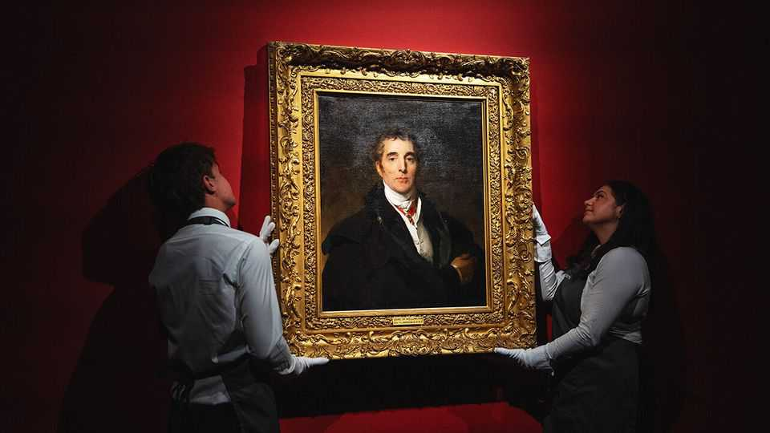
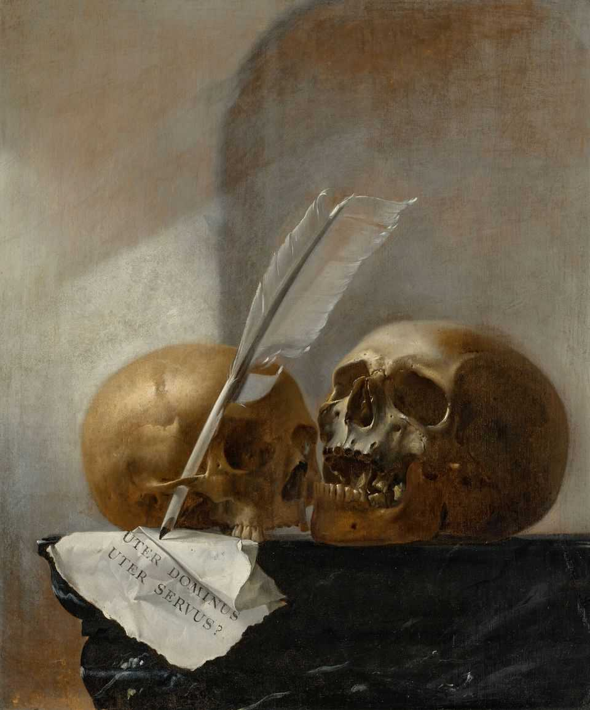
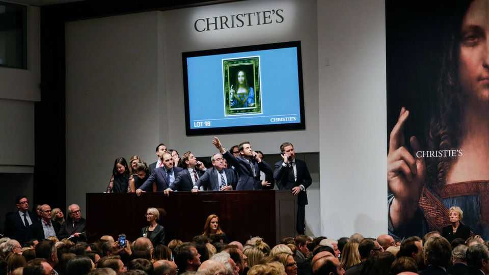

Why Old Master paintings are back in vogue
Attitudes towards art, value and what it takes to be a good collector are changing
July 9th 2026

ON FIRST GLANCE the painting—by an unknown Dutch artist in the 17th century—seemed unlikely to spark a bidding war. It depicts two skulls and a handwritten note asking “Uter dominus, uter servus?” (Which is the master, which is the slave?) Yet on June 30th heady bidding at an auction at Christie’s in London pushed the painting’s price to £431,000 ($575,000), about four times the estimate. There is a “yearning for the unusual”, explains Andrew Fletcher, head of Christie’s Old Masters department, who has seen a surge of interest in “the weird and wonderful”.
Old Masters—a centuries-spanning category that includes works typically completed before 1850—have seen new life breathed into them. In that same Christie’s auction records were set for six artists, including Sir Thomas Lawrence, an English painter, whose portrait of the Duke of Wellington (pictured above), the general who beat Napoleon, fetched £9.7m. “It’s the most optimistic moment I can remember in the Old Masters market for some years,” says Mr Fletcher.
The value of Old Masters sales worldwide in 2025 was $1.2bn, 30% higher than a year earlier. But data may not capture the “full story” of the uptick, as many paintings are sold privately, says Patrick Williams, a gallerist in New York. Younger buyers are showing more enthusiasm. This year around 16% of bidders in Old Masters sales at Sotheby’s, another auction house, are under the age of 40, nearly triple the share from five years ago.

Until the 1980s Old Masters ruled the art world. But then collectors decided the category was too old-timey and turned to collecting Impressionist and contemporary works instead. Several things have changed in the past two years. First, some parts of the market for contemporary art showed signs of volatility. Collectors realised that Old Masters are stable and significantly less expensive. “For $250,000 you can buy a painting that could hang in the Louvre, but $10m gets you a bad Picasso,” says Mr Williams. There is also scarcity: more Old Master paintings are entering museum collections every year.
Art buyers have also become more open-minded about mixing pictures from different periods. A “turning-point” came in 2017, says Sylvie Winckler, a Belgian collector: that was when Christie’s sold Leonardo da Vinci’s heavily restored “Salvator Mundi” for $450m, the highest price ever paid for an artwork, in a post-war- and contemporary-art auction. It showed how older art could look sleek alongside more modern works in the white boxes many wealthy people call homes.
Opinions about what constitutes “good” collecting have changed, too. Conventionally, buyers of Old Masters were like PhD candidates, specialising in areas such as 18th-century French still-lifes. Today people buy art more eclectically and expansively. A new generation of collectors is driven “less by traditional connoisseurship and more by image and the visible impact of the work itself”, says Valentina Castellani, author of “Trading Beauty”, a history of art buying.

This means that portraits and figurative art are in vogue, because they are Instagrammable. People spend so much time looking at pictures of other people on social media that they are primed to connect to painted ones. There is an allure to old-fashioned fabrics and romanticising of what appears to be a simpler life (if you ignore the revolutions, plagues and awful dentistry of past eras). Charles Stewart, the boss of Sotheby’s, attributes resurging interest in Old Masters to an “AI effect”: “Older things feel more artisanal and human,” he says.
Dealers have become more masterful in marketing to a new clientele. Secular images are easier to sell than religious ones, as are works with an intriguing back story. This was evident at TEFAF Maastricht, an art fair that is the biggest gathering for Old Masters buyers and dealers, in March. Paul Smeets, a gallerist, displayed a painting by Guido Cagnacci, an Italian who died in 1663. It was of the Virgin Mary, adorned with a golden halo, reading a book. “Ten years ago we would have just left ‘Virgin Reading’ as a title,” says Mr Smeets. But instead he wanted to highlight that the sitter might have been the paramour of the artist. So he called it “Possibly a portrait of Maddalena Fontanafredda as the Virgin Reading”. Clunky, yes, but it added drama and passion to a familiar scene. The work sold quickly. Old Masters have a lot of lovers these days. ■
For more on the latest books, films, TV shows, albums and controversies, sign up to Plot Twist, our weekly subscriber-only newsletter